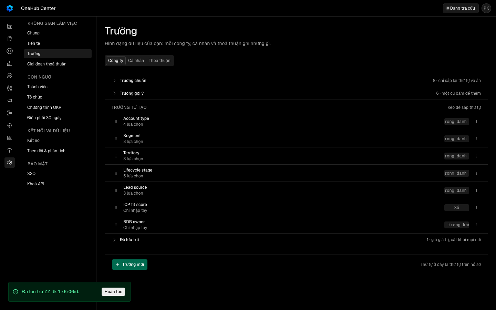

Hàng V2b của docs/plan/lo-trinh-okr.json, dãy P3 đợt r2; Cổng Đáng build (chủ kho, 2026-10-12T23:58:15Z). Mở từ OOS-2 của V2 vong-doi-mot-cach-cat. docs/vong-doi.md dặn lưu trữ không hỏi và toast luôn có «Hoàn tác». Hôm nay lưu trữ một trường từ menu dòng không có «Hoàn tác», từ trình sửa trường thì hỏi lại bằng một hộp và cũng không có «Hoàn tác».
docs/superpowers/specs/2026-10-13-luu-tru-truong-khong-hoi-design.md
| Eval | Tiêu chí | Loại | Verdict | run_id | verified_at |
|---|---|---|---|---|---|
| E1 | AC-1 | test | PASS | minted-luu-tru-truong-khong-hoi-E1-r1 | 2026-10-13T11:44:57Z |
| E2 | AC-2 | test | PASS | minted-luu-tru-truong-khong-hoi-E2-r1 | 2026-10-13T11:44:57Z |
| E3 | AC-3 | test | PASS | minted-luu-tru-truong-khong-hoi-E3-r1 | 2026-10-13T11:44:57Z |
| E4 | AC-4 | test | PASS | minted-luu-tru-truong-khong-hoi-E4-r1 | 2026-10-13T11:44:57Z |
| E5 | AC-5 | test | PASS | minted-luu-tru-truong-khong-hoi-E5-r1 | 2026-10-13T11:44:57Z |
| E6 | AC-5 | test | PASS | minted-luu-tru-truong-khong-hoi-E6-r1 | 2026-10-13T11:44:57Z |
| E7 | AC-6 | test | PASS | minted-luu-tru-truong-khong-hoi-E7-r1 | 2026-10-13T11:44:57Z |
| E8 | AC-6 | test | PASS | minted-luu-tru-truong-khong-hoi-E8-r1 | 2026-10-13T11:44:57Z |
| E9 | AC-7 | script | PASS | minted-luu-tru-truong-khong-hoi-E9-r2 | 2026-10-13T13:59:29Z |
| E10 | AC-7 | ui-check | PASS | minted-luu-tru-truong-khong-hoi-E10-r2 | 2026-10-13T13:59:29Z |
| E11 | AC-8 | judgment | PASS | — | — |
| E12 | AC-5 | test | PASS | minted-luu-tru-truong-khong-hoi-E12-r1 | 2026-10-13T11:44:57Z |
| E13 | AC-2 | script | PASS | design-gate-e1e8026a41 | 2026-10-13T11:44:57Z |
AC-1: Given danh sách trường của một loại bản ghi có trường đang dùng «Nguồn khách», When người quản trị chọn «Lưu trữ» trong menu «…» của dòng đó, Then `fields.archive` được gọi đúng một lần với id của trường, không hộp hỏi lại nào mở, và hiện toast «Đã lưu trữ Nguồn khách.» có nút «Hoàn tác»; danh sách trường được đọc lại.
AC-2: Given trình sửa của trường «Nguồn khách» đang mở, When người quản trị bấm «Lưu trữ», Then `fields.archive` được gọi đúng một lần với id đó, không hộp hỏi lại nào mở, trình sửa đóng, và hiện cùng toast có «Hoàn tác».
AC-3: Given toast của AC-1 hoặc AC-2 đang hiện, When bấm «Hoàn tác» (kể cả bấm hai lần), Then `fields.restore` được gọi đúng một lần với đúng id đó, hiện toast «Đã khôi phục Nguồn khách.», và danh sách trường được đọc lại.
AC-4: Given `fields.restore` trả lỗi, When bấm «Hoàn tác», Then hiện toast «Chưa hoàn tác được. Trường vẫn ở mục Đã lưu trữ.» và lời lỗi thô của máy chủ không hiện ra màn hình.
AC-5: Given giao diện tiếng Việt và tiếng Anh, When đọc các toast của AC-1…AC-4, Then chữ tiếng Việt như trên và chữ tiếng Anh tương ứng không có ký tự tiếng Việt có dấu; khoá chữ mới có đủ cặp vi/en, và không còn khoá chữ nào không ai gọi.
AC-5: Given giao diện tiếng Việt và tiếng Anh, When đọc các toast của AC-1…AC-4, Then chữ tiếng Việt như trên và chữ tiếng Anh tương ứng không có ký tự tiếng Việt có dấu; khoá chữ mới có đủ cặp vi/en, và không còn khoá chữ nào không ai gọi.
AC-6: Given người dùng không có quyền quản trị, When mở danh sách trường ở Cài đặt › Trường và ở ngăn «Quản lý trường», Then nút «…» của dòng vẫn bị khoá và trình sửa trường không mở được như hôm nay, kèm dòng nói vì sao.
AC-6: Given người dùng không có quyền quản trị, When mở danh sách trường ở Cài đặt › Trường và ở ngăn «Quản lý trường», Then nút «…» của dòng vẫn bị khoá và trình sửa trường không mở được như hôm nay, kèm dòng nói vì sao.
AC-7: Given bản chạy thật của cây này, một trường tự tạo trên thẻ Công ty ở Cài đặt › Trường, When lưu trữ nó từ menu dòng, chụp màn lúc toast hiện, rồi bấm «Hoàn tác», Then lúc toast hiện trường nằm trong nhóm «Đã lưu trữ» và máy chủ báo trường có mốc lưu trữ; sau «Hoàn tác» trường về nhóm đang dùng và máy chủ báo không còn mốc lưu trữ; làm lại từ trình sửa ở khổ 390 cho cùng kết quả (máy chủ báo có mốc rồi hết mốc), toast và «Hoàn tác» nằm trong khung nhìn; làm lại từ menu dòng trong ngăn «Quản lý trường» mở từ bảng Công ty thì bấm «Hoàn tác» không làm đóng ngăn và trường về nhóm đang dùng. (cross-layer)
phien-do: xong — mã 0
AC-7: Given bản chạy thật của cây này, một trường tự tạo trên thẻ Công ty ở Cài đặt › Trường, When lưu trữ nó từ menu dòng, chụp màn lúc toast hiện, rồi bấm «Hoàn tác», Then lúc toast hiện trường nằm trong nhóm «Đã lưu trữ» và máy chủ báo trường có mốc lưu trữ; sau «Hoàn tác» trường về nhóm đang dùng và máy chủ báo không còn mốc lưu trữ; làm lại từ trình sửa ở khổ 390 cho cùng kết quả (máy chủ báo có mốc rồi hết mốc), toast và «Hoàn tác» nằm trong khung nhìn; làm lại từ menu dòng trong ngăn «Quản lý trường» mở từ bảng Công ty thì bấm «Hoàn tác» không làm đóng ngăn và trường về nhóm đang dùng. (cross-layer)

AC-8: Given ảnh chụp của AC-7, When một người không làm lượt này nhìn, Then hiểu ngay trường vừa được cất (không phải bị xoá) và lấy lại được bằng «Hoàn tác».
Phán đoán: Ba judge cung cho PASS; xem tung phieu ben duoi.
AC-5: Given giao diện tiếng Việt và tiếng Anh, When đọc các toast của AC-1…AC-4, Then chữ tiếng Việt như trên và chữ tiếng Anh tương ứng không có ký tự tiếng Việt có dấu; khoá chữ mới có đủ cặp vi/en, và không còn khoá chữ nào không ai gọi.
AC-2: Given trình sửa của trường «Nguồn khách» đang mở, When người quản trị bấm «Lưu trữ», Then `fields.archive` được gọi đúng một lần với id đó, không hộp hỏi lại nào mở, trình sửa đóng, và hiện cùng toast có «Hoàn tác».
| Khối | Tác tử | Token đầu ra |
|---|---|---|
| S4 round 1 | 31 | 80.411 |
| S4 round 2 | 19 | 57.242 |
2 lượt chấm · tổng 137.653 token
chưa gộp vào onehub (nhánh production kho khai)